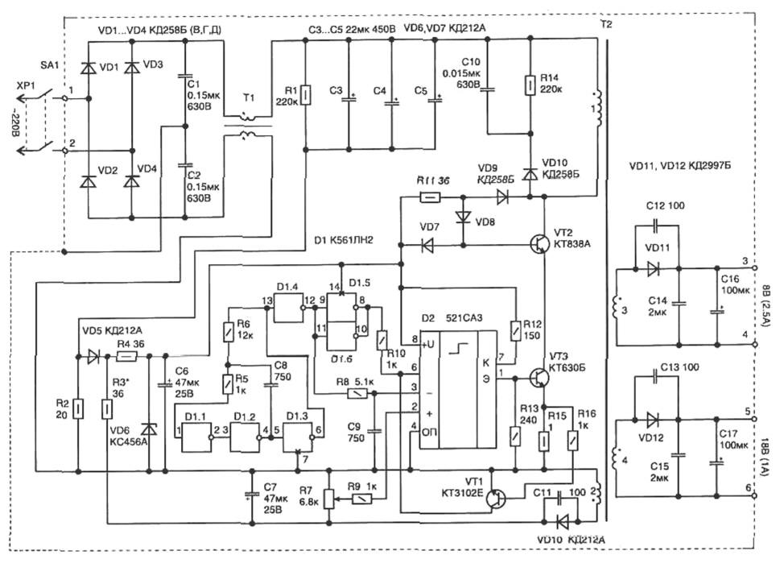
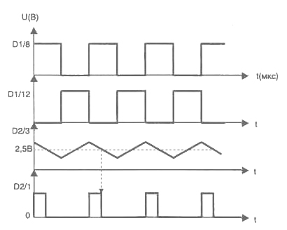

Импульсный источник питания
Принципиальная электрическая схема импульсного источника питания приведена на рис. 1. Источник питания представляет собой однотактный импульсный преобразователь напряжения, работающий на частоте, примерно, 50 кГц. Выходная мощность источника - 40 Вт.

Рис. 1 - Схема импульсного источника питания
В момент включения питания конденсаторы С3-С5 заряжаются через резистор R2. При этом кратковременный импульс напряжения с этого резистора через диод VD5 и резистор R4 поступает на конденсатор С6 и заряжает его. Стабилитрон VD6 ограничивает уровень напряжения для питания микросхемы величиной 5,6 В. Это обеспечивает первоначальный запуск схемы и питание автогенератора. В дальнейшем необходимое питающее напряжение для схемы снимается со вторичной обмотки (2) трансформатора Т2.
На элементах микросхемы D1.1-D1.4 собран задающий генератор импульсов, которые через резистор R8 поступают на конденсатор C9. В результате на конденсаторе С9 образуется напряжение пилаобразной формы. Компаратор D2 сравнивает напряжение пилы с уровнем напряжения на входе 2.На выходе компаратора формируются импульсы, длительность которых определяется величиной напряжения на входе 2. Эти импульсы через усилитель мощности, собранном на транзисторах VT3 и VT4, поступают на первичную обмотку трансформатора. Напряжение со вторичных обмоток которого выпрямляется диодами VD1,VD2 и поступает на выходы источника.
С обмотки обратной связи 2 трансформатора выпрямленное напряжение через резисторы R7 и R9 поступает на вход 2 компаратора, чем обеспечивается стабилизация выходного напряжения при изменении сетевого на входе и мощности нагрузки. Коэффициент стабилизации преобразователя зависит от наклона пилы на конденсаторе С9.
Диаграммы напряжения, показанные на рис. 2, поясняют работу схемы. Транзистор VT1 обеспечивает защиту источника питания от перегрузки по току. При его открывании срабатывает блокировка работы компаратора (при лог. "0" на входе D2/6)Сигнал блокировки периодически подается также с выхода генератора. Это исключает нахождение компаратора в открытом состоянии длительное время.

Рис. 2 - Форма напряжения в контрольных точках схемы
В случае срабатывания защиты, чтобы вернуть схему в рабочее состояние (запустить), потребуется на некоторое время отключить источник питания от сети (конденсаторы СЗ-С5 разрядятся через резистор R1).
В схеме применены детали: резисторы R1 — МЛТ, R2 — С5-5 на 1 Вт, подстроечный R7 — типа СП5-16ВА-0,25 Вт, остальные резисторы могут быть любо го типа; конденсаторы С1, С2 и С10 — типа К42У-2, СЗ...С5 — К50-29 на 450 В, С6, С7 типа К50-35, С8, С9, С11...С13—К10-17, С14, С15—К10-17. Транзистор VT2 можно заменить на КТ839А.
Дроссель фильтра Т1 выполняется на двух соединенных вместе ферритовых торроидальных сердечниках М2000НМ1 типоразмера К20х10х7,5 мм. Обе обмотки содержат по 40 витков провода ПЭЛ-2 диаметром 0,33 мм (перед на моткой острые края сердечника необходимо закруглить надфилем).
Для изготовления трансформатора Т2 взяты ферритовые (М2000НМ1) чашки типоразмера БЗ0. В центральной части магнитопровод должен иметь зазор примерно 0,2-0,6 мм (чтобы трансформатор при работе не насыщался). Обмотки содержат: 1—120 витков; 2—7 витков провода ПЭЛ-2 диаметром 0,15 мм; 3 — 8 витков провода диаметром 3х0,33 мм (наматывается тремя проводами одновременно), 4 — 19 витков 0,5 мм.
Транзистор VT2 устанавливается на радиатор, а вся конструкция закрывается сетчатым экраном (для теплоотвода от Т2 и VT2). Экран позволяет снизить уровень излучений и помех при работе источника.
Перед включением трансформатора Т2 необходимо убедиться в работоспособности схемы формирования импульсов на выходе D2/1. Для этого можно временно подать питание 9 В на конденсатор С7 от внешнего источника.
При правильной фазировке подключения обмоток у трансформатора Т2 настройка схемы заключается в установке резистором R7 необходимой величины напряжения во вторичной обмотке и проверки запуска схемы при минимальном питающем напряжении 180 В.